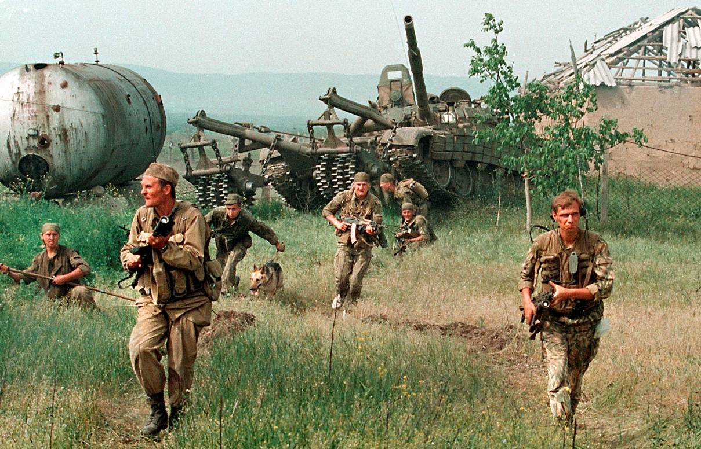
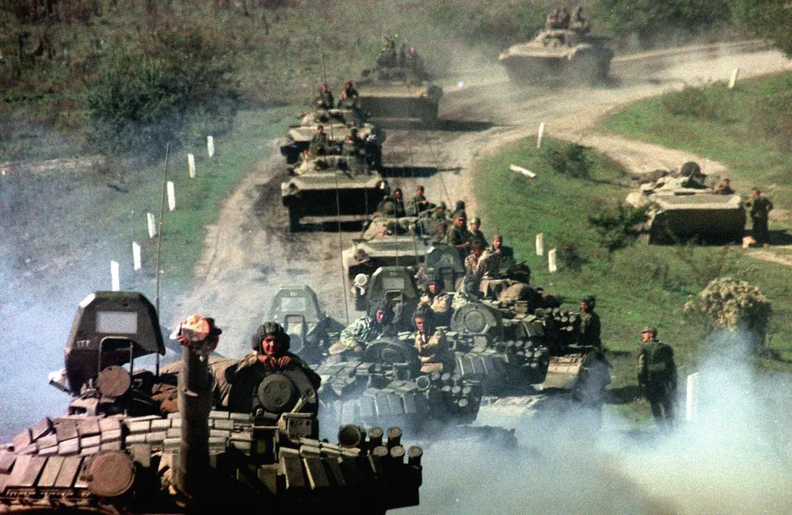
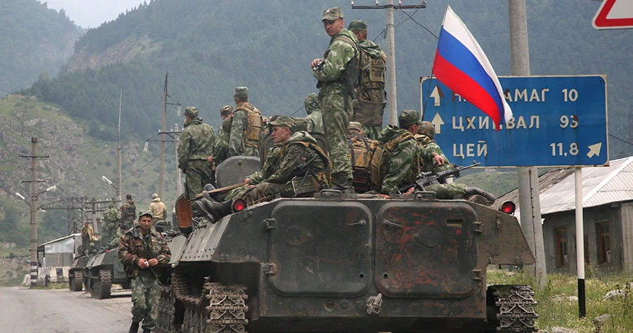
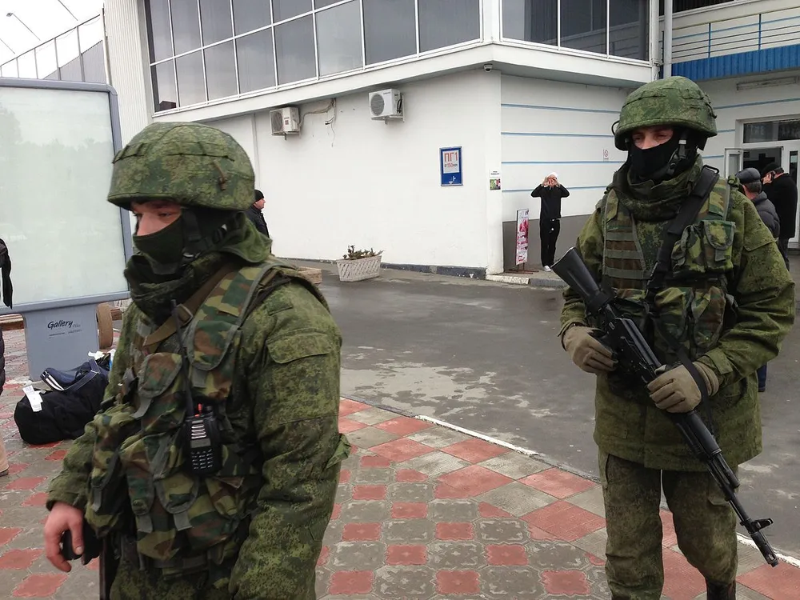
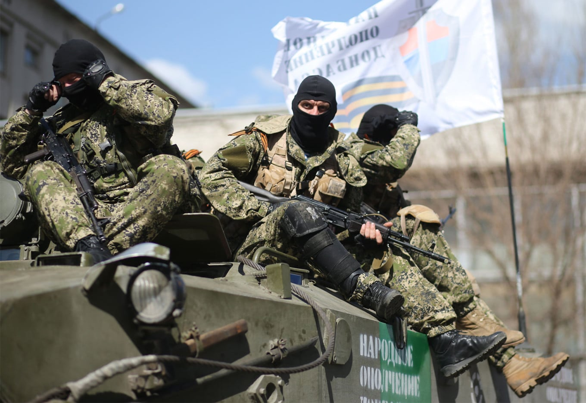
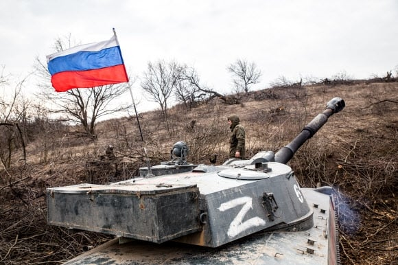
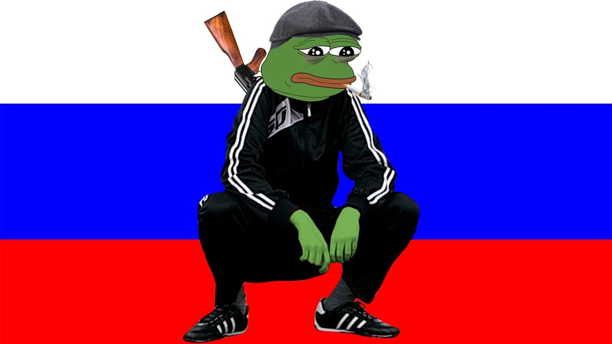

1차 체첸 전쟁
"불법 단체 토벌을 위한 경찰 작전임"

2차 체첸 전쟁
"대테러 작전임"

러시아-조지아 전쟁 (남오세티야 전쟁)
"평화 강제 작전임"

크림 반도 합병
"지들이 알아서 우리한테 붙던데?"

돈바스 전쟁
"이건 지들끼리 내전하는 거임"

러시아-우크라이나 전쟁
"특별 군사 작전"

"우린 단 한 번도 전쟁을 일으킨 적 없는 평화의 국가다 수까"
한국도 북쪽에 UN에 멀쩡히 가입한 국가를 국가 아니고 반정부단체라고 하잖아
그거랑 똑같지뭐